Whisker Commons / iOS 26设计稿 · 待审核 / A01
附近 / 内容发现
照片建立记忆点；区域与身份筛选收为两个控件。仅在公开照片可用时显示照片，缺图使用 B05。 v2 材质修订：内容滚到导航下方时可看见模糊轮廓；内容可继续上滑并从导航下方经过。

Whisker Commons / iOS 26设计稿 · 待审核 / A02
地图 / 区域概览
地图铺满视野，用范围面替代猫的精确标记；点区域展开 B02。地图为布局示意，落地使用 Apple Maps。

Whisker Commons / iOS 26设计稿 · 待审核 / A03
报告 / 创建与恢复
新建为唯一主按钮；草稿和已提交报告分别呈现。无草稿时使用 F08，不展示空卡片。

Whisker Commons / iOS 26设计稿 · 待审核 / A04
关注 / 持续照护
保留猫关注与刷新；不用未经实现的消息红点、区域订阅或推送开关。

Whisker Commons / iOS 26设计稿 · 待审核 / A05
我的 / 分组个人中心
资料、活动、偏好三层结构。昵称不与登录表单混排；退出登录单独分组。

Whisker Commons / iOS 26设计稿 · 待审核 / B01
附近筛选 / 底部浮层
将旧版六个常驻文本按钮移入一个面板；沿用现有三个试点区域与身份筛选。
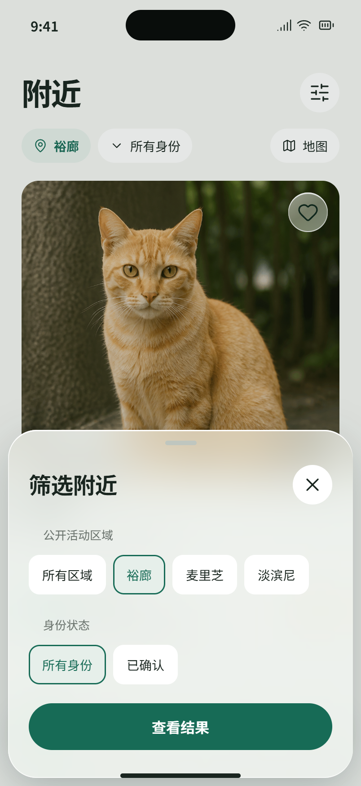
Whisker Commons / iOS 26设计稿 · 待审核 / B02
区域详情 / 地图浮层
区域 → 猫档案或新报告；移除尚不可用的区域关注按钮。聚合数字只按真实服务结果显示，稿中不编造。
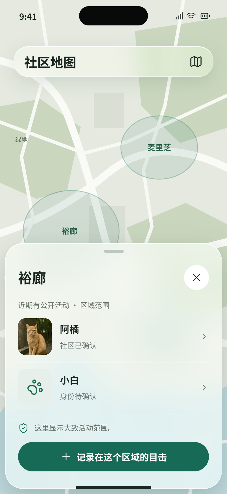
Whisker Commons / iOS 26设计稿 · 待审核 / B03
猫档案 / 核心详情
大图与身份信息优先；照护和活动作为两条明确入口；更多菜单承载举报与纠错。大图仅限真实可公开媒体。
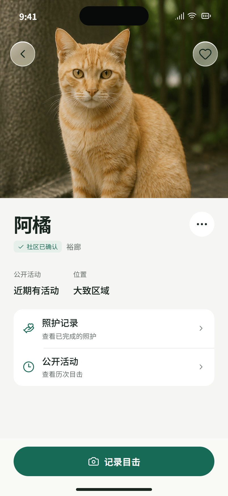
Whisker Commons / iOS 26设计稿 · 待审核 / B04
猫的公开活动 / 历史
拟将已有安全页可读取的延迟公开目击摘要整理成独立活动页。只用公开字段，不能把身份状态编成历史事件。
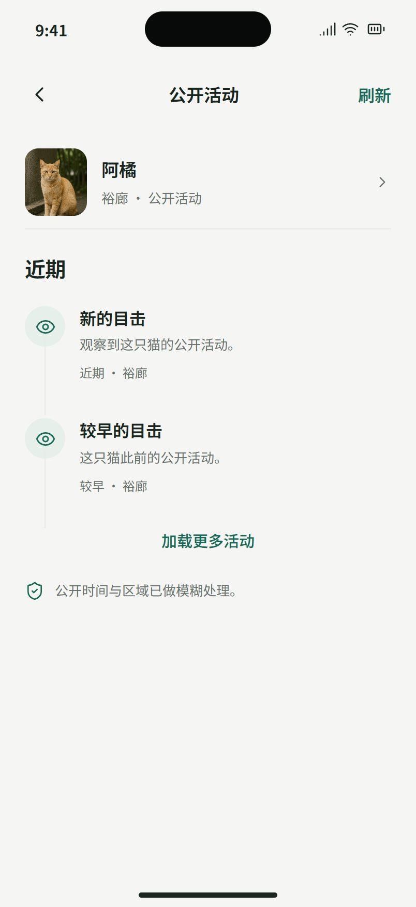
Whisker Commons / iOS 26设计稿 · 待审核 / B05
缺少公开照片 / 真实基线
当前公开 API 未返回照片时必须使用此版，不能拿私有报告照片或样例照片冒充。附近列表同步用图标缩略图。
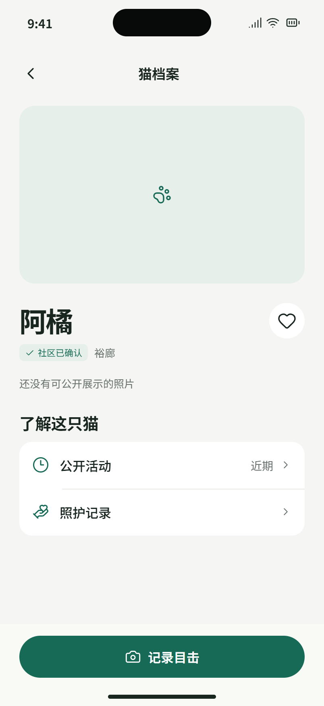
Whisker Commons / iOS 26设计稿 · 待审核 / B06
地图 / 区域列表
完整保留现有地图/列表切换。地图服务不可用时仍能浏览已读到的区域摘要。
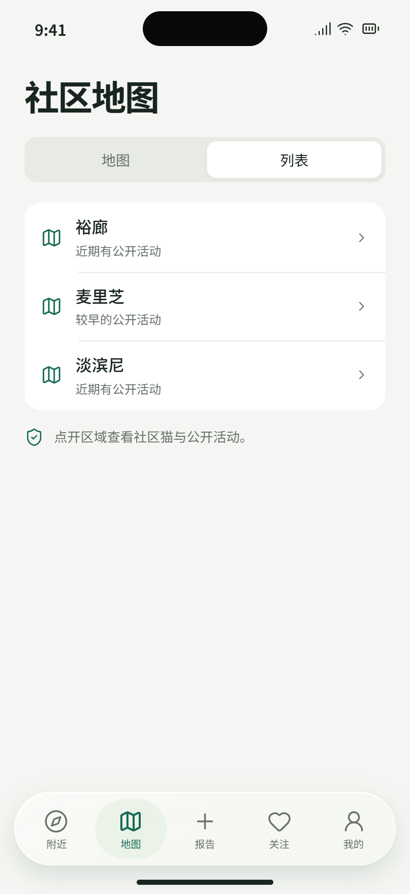
Whisker Commons / iOS 26设计稿 · 待审核 / B07
猫档案 / 更多操作
详情顶部更多按钮的完整内容；现有安全与纠错能力保持可发现。
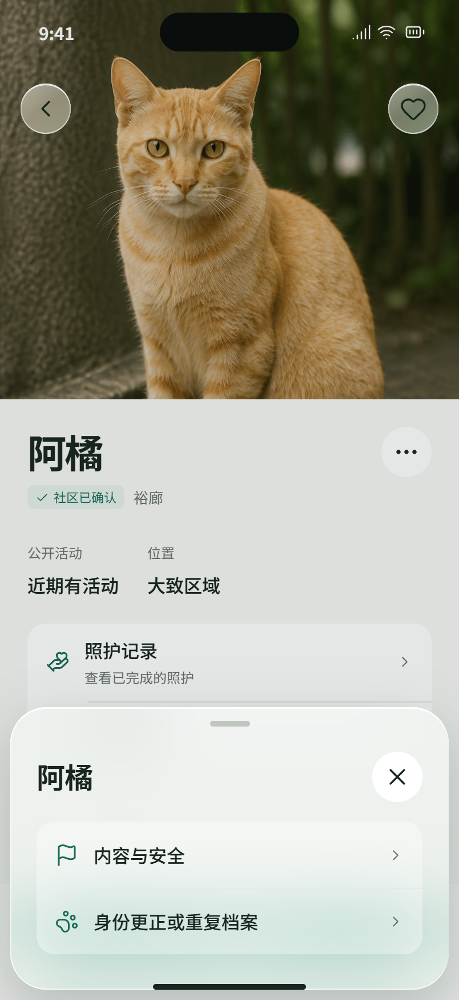
Whisker Commons / iOS 26设计稿 · 待审核 / B08
猫档案 / 已关注
关注后使用实心爱心与可访问性“取消关注”标签。取消关注直接可逆，不额外增加确认门禁。
Whisker Commons / iOS 26设计稿 · 待审核 / C01
添加照片 / 第一步
保留无照片报告路径；相册和相机由系统接管。下一步前有照片时进入 C02 人工遮挡。

Whisker Commons / iOS 26设计稿 · 待审核 / C02
照片检查 / 手动遮挡
黑色实心遮挡、可选中删除与重做；处理后的预览必须实际生成再允许确认。图中遮挡仅演示工具，不表示自动检测。

Whisker Commons / iOS 26设计稿 · 待审核 / C03
描述这只猫 / 第二步
保留现有外观字段；以多选标签代替长段枚举说明。长备注随键盘滚动，不遮挡继续。

Whisker Commons / iOS 26设计稿 · 待审核 / C04
状态与保护 / 第三步
健康状态与位置风险是不同字段，保持分开；提示只在此决策点出现一次。

Whisker Commons / iOS 26设计稿 · 待审核 / C05
选择大致区域 / 第四步
保留单次定位与手选两条路径；手选进入 C06；拒绝定位仍可继续。

Whisker Commons / iOS 26设计稿 · 待审核 / C06
手动选区 / 区域选择器
当前只显示三个已支持的试点区域；示意地图不提供真实经纬度或精确猫位置。

Whisker Commons / iOS 26设计稿 · 待审核 / C07
确认报告 / 第五步
可回到对应步骤修改；此处不重复训练同意、审核流程等无关说明。

Whisker Commons / iOS 26设计稿 · 待审核 / C08
提交报告 / 正在发送
保留当前草稿与请求标识；确认结果前禁用重复提交，不虚构上传百分比。

Whisker Commons / iOS 26设计稿 · 待审核 / C09
提交回执 / 完整成功
分别呈现报告、媒体、身份状态；成功反馈克制。身份证据仍由独立人员确认。

Whisker Commons / iOS 26设计稿 · 待审核 / C10
提交回执 / 仅文字成功
建议新增明确的媒体恢复入口，需绑定原草稿和稳定请求。当前不是已实现功能；若本机副本不可恢复，改为“查看照片状态”，不能承诺重新上传。文字报告始终保留。

Whisker Commons / iOS 26设计稿 · 待审核 / C11
选择身份 / 已有猫
人工选择，不展示 AI 相似度和推荐排名；已有猫、新猫、跳过三条路径都可见。选中状态落地必须明确。

Whisker Commons / iOS 26设计稿 · 待审核 / C12
新猫提案 / 确认选择
将新猫选择与结果分开，让用户理解实际提交的是提案。此确认可与原选择页内联实现。

Whisker Commons / iOS 26设计稿 · 待审核 / C13
身份提案 / 已提交
不把待确认冒充匹配成功；再次打开不要求重做已完成步骤。

Whisker Commons / iOS 26设计稿 · 待审核 / C14
我的报告 / 状态列表
默认只用提交日期与生命周期。补照片是建议的 U2 恢复入口，实施前验证可恢复的原草稿；否则显示“媒体待处理”并进入回执。

Whisker Commons / iOS 26设计稿 · 待审核 / C15
草稿操作 / 继续或删除
长按或草稿“更多”进入；删除前二次系统确认，保留与当前账户一致的归属校验。

Whisker Commons / iOS 26设计稿 · 待审核 / C16
报告归属 / 登录后继续
登录只在贡献动作需要时出现。匿名草稿需由本人明确领取，不在切换账户时自动归属。

Whisker Commons / iOS 26设计稿 · 待审核 / C17
遮挡编辑 / 辅助操作
保留原有可访问性移动/大小控制，不能只提供拖拽；清除全部遮挡后需重新生成与确认预览。

Whisker Commons / iOS 26设计稿 · 待审核 / C18
照片检查 / 使用确认
确认的是当前实际渲染的副本；生成失败/未落盘时按钮禁用，不能用过期预览通过。

Whisker Commons / iOS 26设计稿 · 待审核 / C19
报告结果 / 已关联档案
示例为已关联身份且媒体已收到的报告。媒体行必须依据真实状态替换：未添加、待处理、待恢复、已移除或清理中；身份关联不能决定照片状态。

Whisker Commons / iOS 26设计稿 · 待审核 / C20
身份结果 / 需要重新选择
不将提案结束解释为猫身份自动改变；依照实际结果显示重选入口。

Whisker Commons / iOS 26设计稿 · 待审核 / C21
删除草稿 / 确认
C15 选择删除后的明确确认。实现时只操作所属账户/匿名当前草稿，不扩展为批量删除。

Whisker Commons / iOS 26设计稿 · 待审核 / D01
照护记录 / 公共时间线
时间线只使用公开的粗略时间窗；不推断照护者姓名，也不显示私有完成时刻。
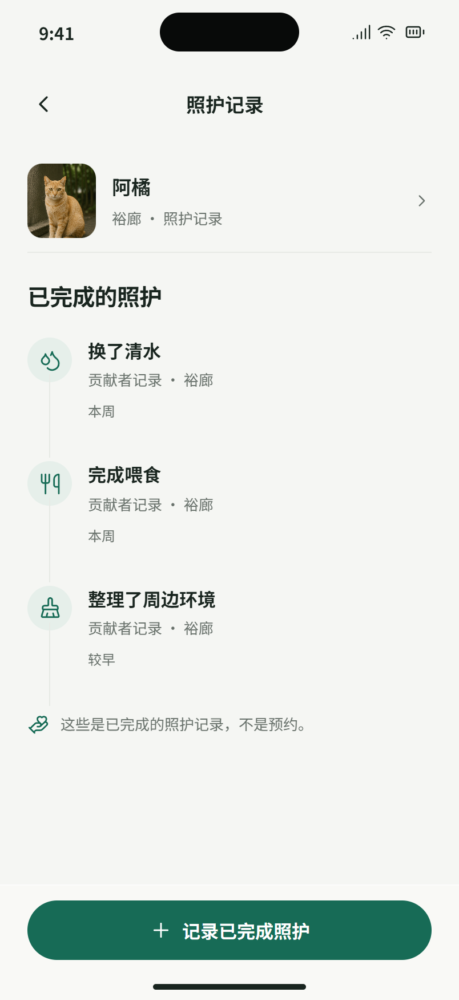
Whisker Commons / iOS 26设计稿 · 待审核 / D02
记录照护 / 完成表单
选择活动、三个区域之一、系统日期与时间；避免要求手填 YYYY-MM-DD。日期时间仅属本人记录。
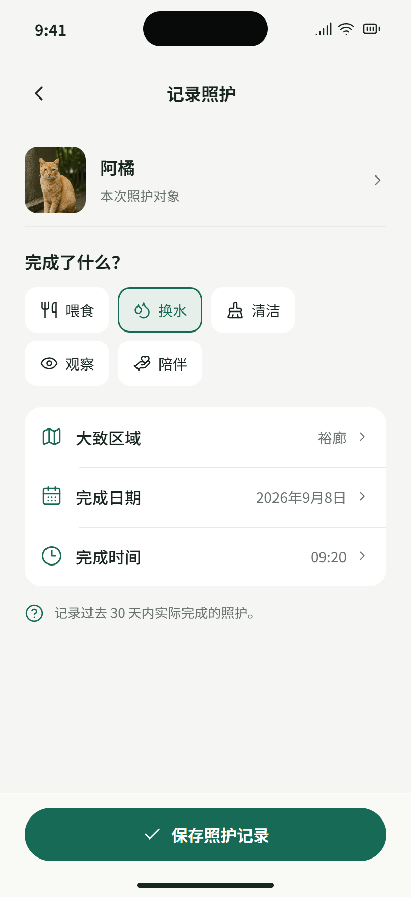
Whisker Commons / iOS 26设计稿 · 待审核 / D03
我的照护 / 管理列表
点开记录可更正或撤回；已撤回/更正记录保留状态，不再提供不适用操作。
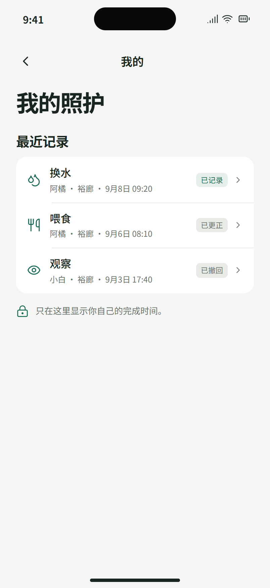
Whisker Commons / iOS 26设计稿 · 待审核 / D04
更正照护 / 编辑表单
沿用 D02 格式，保留历史记录语义；请求结果未确认时锁定原输入并重试同一请求。
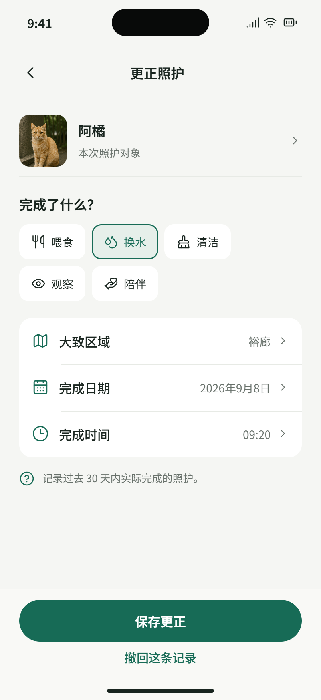
Whisker Commons / iOS 26设计稿 · 待审核 / D05
撤回照护 / 破坏性确认
只对撤回等实际改变数据的操作确认；不为普通浏览和保存增加门禁。
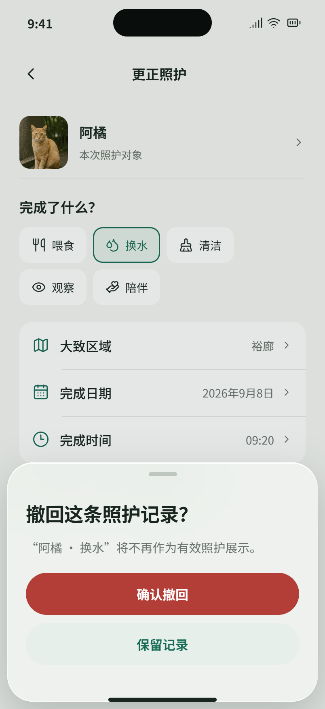
Whisker Commons / iOS 26设计稿 · 待审核 / D06
照护保存 / 成功结果
以真实服务确认作为成功条件；“未能确认保存”使用 F06，不虚构完成状态。
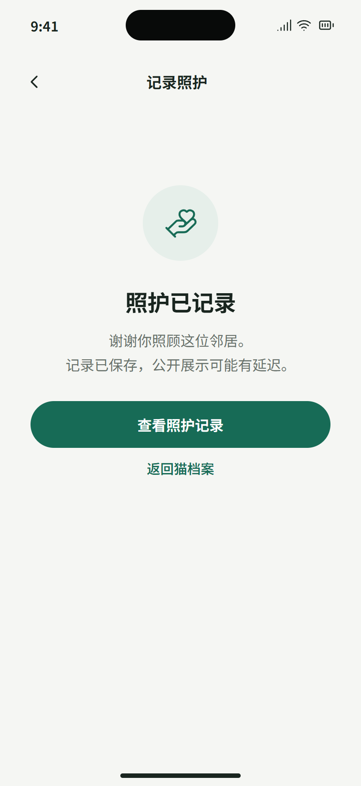
Whisker Commons / iOS 26设计稿 · 待审核 / E01
编辑个人资料 / 统一表单
昵称为本轮已有可编辑字段；头像保持系统符号，不虚构头像上传、手机号、性别和地址字段。示例邮箱非用户数据。

Whisker Commons / iOS 26设计稿 · 待审核 / E02
登录 / 邮箱链接
主要入口沿用邮箱 magic link；已配置的 Apple/Google 登录放到 E19。浏览无需账户，贡献时再进入此页。

Whisker Commons / iOS 26设计稿 · 待审核 / E03
登录链接 / 查看邮箱
邮箱地址只在本人登录流程显示；重发沿用节流。返回邮件后的上下文保持当前草稿。

Whisker Commons / iOS 26设计稿 · 待审核 / E04
登录回调 / 链接失效
回调页不应停留技术错误文本；成功自动返回待办，失败提供重试与退出。

Whisker Commons / iOS 26设计稿 · 待审核 / E05
贡献资格 / 一次确认
只在首次需要资格时出现；已确认账户不在个人首页反复展示年龄门禁。

Whisker Commons / iOS 26设计稿 · 待审核 / E06
语言 / 系统分组选择
两种现有语言完整保留，不添加尚未实现的自动翻译或多语言承诺。

Whisker Commons / iOS 26设计稿 · 待审核 / E07
隐私与请求 / 入口页
把旧版所有表单堆在同一页的问题改为清楚入口；表单、状态和删除独立呈现。

Whisker Commons / iOS 26设计稿 · 待审核 / E08
资料请求 / 选择与说明
三个个人资料请求类型共用相同格式；身份更正、重复猫与申诉另见 E17，避免用户面对六种混杂选项。

Whisker Commons / iOS 26设计稿 · 待审核 / E09
我的请求 / 状态列表
分组不混淆资料权利与内容审核；状态显示服务真实值，不把关闭受理等同纠错成功。

Whisker Commons / iOS 26设计稿 · 待审核 / E10
请求详情 / 回执与进度
完整不透明 ID 只在详情中可复制；不占列表和主页面视觉。示例 ID 不对应真实请求。

Whisker Commons / iOS 26设计稿 · 待审核 / E11
删除账户 / 明确后果
只此处展示删除后查询限制，不能把“申请已接收”写成“已彻底删除”。当前站外渠道缺失如实告知。

Whisker Commons / iOS 26设计稿 · 待审核 / E12
删除回执 / 退出后保留
登出后只展示允许保存的本机回执与状态；不伪造查询能力。

Whisker Commons / iOS 26设计稿 · 待审核 / E13
内容安全 / 选择活动
先选具体内容，再举报/屏蔽；独立入口处理猫档案错误，不把审核工具塞进猫详情首页。

Whisker Commons / iOS 26设计稿 · 待审核 / E14
内容举报 / 理由选择
理由标签必须映射现有 reasonCode；实施前按枚举复核，不新增后端类型。

Whisker Commons / iOS 26设计稿 · 待审核 / E15
屏蔽贡献者 / 确认
不暴露贡献者私有身份。实际屏蔽效果依据服务端规则；不声称已支持解除屏蔽管理。

Whisker Commons / iOS 26设计稿 · 待审核 / E16
退出账户 / 账户操作
切换账户清除旧会话视图；本机草稿不允许被下一位账户自动继承。

Whisker Commons / iOS 26设计稿 · 待审核 / E17
身份纠错 / 档案请求
覆盖现有另三个权利类型。相关猫从入口传入，缺上下文时先选择档案。

Whisker Commons / iOS 26设计稿 · 待审核 / E18
个人中心 / 未登录
匿名首页简洁完整，不展示不可用的个人统计或空账号表单。

Whisker Commons / iOS 26设计稿 · 待审核 / E19
其他登录方式 / 配置后展示
保留代码已有 Apple/Google 登录入口的设计位置；仅在服务配置及设备回归通过后展示。正式按钮使用厂商品牌规范，当前稿是文字排版示意。

Whisker Commons / iOS 26设计稿 · 待审核 / F01
附近 / 没有活动
真实空数据不回填演示猫，不渲染重复大占位卡片。

Whisker Commons / iOS 26设计稿 · 待审核 / F02
关注 / 尚未关注
一个清楚下一步，无虚构动态。未登录时将按钮替换为“登录后关注”，见状态矩阵。

Whisker Commons / iOS 26设计稿 · 待审核 / F03
我的报告 / 离线快照
使用 MyReportsScreen 已有的会话内快照；账户变更后清除，不能声称跨重启缓存已实现。

Whisker Commons / iOS 26设计稿 · 待审核 / F04
定位权限 / 拒绝后恢复
不反复弹权限框，主路径仍可完成。系统设置按钮需通过系统 Linking 打开。

Whisker Commons / iOS 26设计稿 · 待审核 / F05
加载失败 / 可以恢复
网络失败、服务不可用使用同一恢复结构，并针对账户连接和数据读取显示准确对象。

Whisker Commons / iOS 26设计稿 · 待审核 / F06
照护保存 / 结果未确认
此结构也用于举报/权利请求的不确定提交结果；不引导重建一条可能重复的数据。

Whisker Commons / iOS 26设计稿 · 待审核 / F07
个人中心 / 大字号
大字号与减少透明度的版式示范。行高随内容增长、允许滚动，非简单整体缩放；退出账户在滚动后。

Whisker Commons / iOS 26设计稿 · 待审核 / F08
报告 / 没有草稿
真实首次进入报告页，移除空的“继续草稿”分组。

Whisker Commons / iOS 26设计稿 · 待审核 / F09
报告 / 本机存储不可用
不能一边声称自动保存、一边让用户进入无法持久化的表单。只保留必要的数据保护拦截。

Whisker Commons / iOS 26设计稿 · 待审核 / F10
附近 / 骨架加载
骨架与最终内容同尺寸，减少跳动。状态由屏幕阅读器播报，减少动态效果时不闪烁。

Whisker Commons / iOS 26设计稿 · 待审核 / F11
登录表单 / 键盘展开
键盘展开后主按钮仍可见；输入采用邮箱键盘、关闭自动大写。图为布局示意，实际由 iOS 系统绘制。

Whisker Commons / iOS 26设计稿 · 待审核 / F12
不可用的报告 / 无权限或失效
不暴露其他账户数据。非法链接、已删除草稿和失效回执提供安全返回，而不是无限加载。

Whisker Commons / iOS 26设计稿 · 待审核 / F13
身份续办 / 暂无可选档案
没有候选并不意味着识别失败；这不是 AI 匹配结果。若读取失败须改为“重试读取档案”。

Whisker Commons / iOS 26设计稿 · 待审核 / F14
身份续办 / 提案发送失败
报告成功与提案失败独立呈现，不因辅助步骤失败丢掉主任务。

Whisker Commons / iOS 26设计稿 · 待审核 / F15
登录回调 / 恢复任务
覆盖收到回调后的短暂恢复状态。成功跳转需会话确认，不仅凭链接到达就宣称登录成功。

Whisker Commons / iOS 26设计稿 · 待审核 / F16
待确认请求 / 重试管理
同一组件也用于 PendingCareNotice，替换对象、链接和文案。停止重试不是撤销请求。

Whisker Commons / iOS 26设计稿 · 待审核 / F17
个人资料 / 保存失败
空白或超 60 字的校验信息紧贴输入；读取失败则展示重试读取，不拿旧账户资料填充。

Whisker Commons / iOS 26设计稿 · 待审核 / F18
我的报告 / 暂无记录
空列表完整页面；下拉刷新与分页失败使用同一列表底部恢复组件。

Whisker Commons / iOS 26设计稿 · 待审核 / F19
我的照护 / 暂无记录
不把未有照护当作欠任务，不引入排行榜、积分或连续打卡压力。

Whisker Commons / iOS 26设计稿 · 待审核 / F20
我的请求 / 暂无请求
与加载、失败明确区分；没有请求时不渲染空回执卡片。

Whisker Commons / iOS 26设计稿 · 待审核 / F21
猫档案 / 不可用
无效 ID、未公开、读取失败的安全返回结构；不暴露内部错误或私有身份信息。

Whisker Commons / iOS 26设计稿 · 待审核 / F22
个人资料 / 读取失败
读取失败与 F17 保存失败分开。未拿到当前账户字段时不显示已填表单或保存操作。

Whisker Commons / iOS 26设计稿 · 待审核 / F23
身份续办 / 档案读取失败
与 F13 真正无候选严格区分；网络失败不能变成“没有匹配”或默认创建新猫。

Whisker Commons / iOS 26设计稿 · 待审核 / G01
附近 / 深色
系统深色模式对应稿。玻璃、图标、背景和正文使用语义色，内容层保持清晰。 v2 材质修订：内容滚到导航下方时可看见模糊轮廓；内容可继续上滑并从导航下方经过。
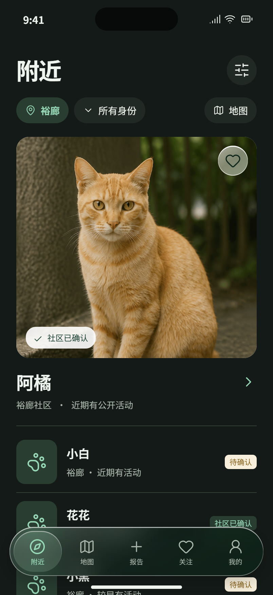
Whisker Commons / iOS 26设计稿 · 待审核 / G02
地图 / 深色
系统深色模式对应稿。玻璃、图标、背景和正文使用语义色，内容层保持清晰。
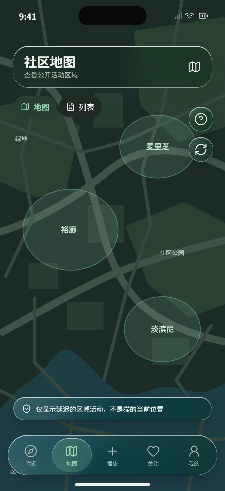
Whisker Commons / iOS 26设计稿 · 待审核 / G03
报告 / 深色
系统深色模式对应稿。玻璃、图标、背景和正文使用语义色，内容层保持清晰。
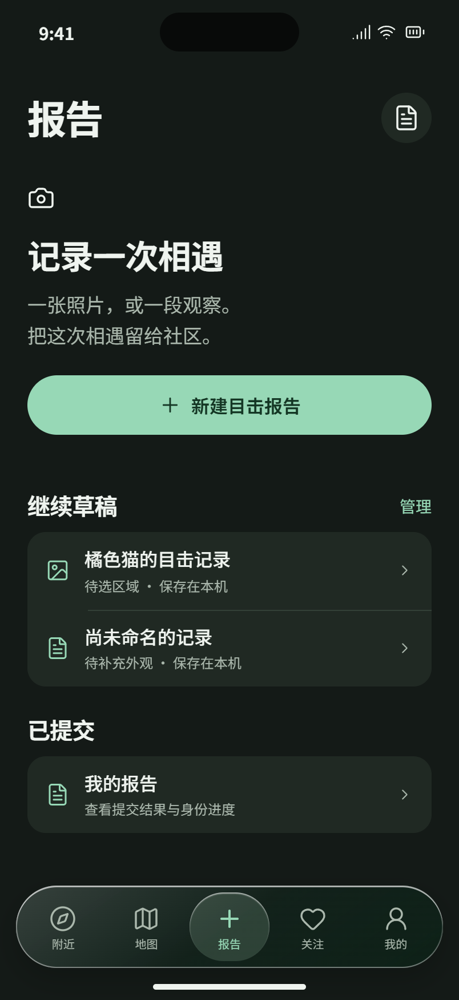
Whisker Commons / iOS 26设计稿 · 待审核 / G04
关注 / 深色
系统深色模式对应稿。玻璃、图标、背景和正文使用语义色，内容层保持清晰。
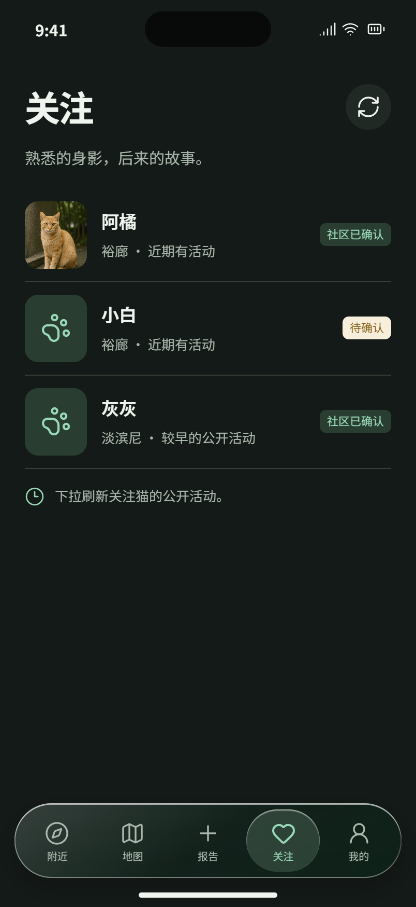
Whisker Commons / iOS 26设计稿 · 待审核 / G05
我的 / 深色
系统深色模式对应稿。玻璃、图标、背景和正文使用语义色，内容层保持清晰。
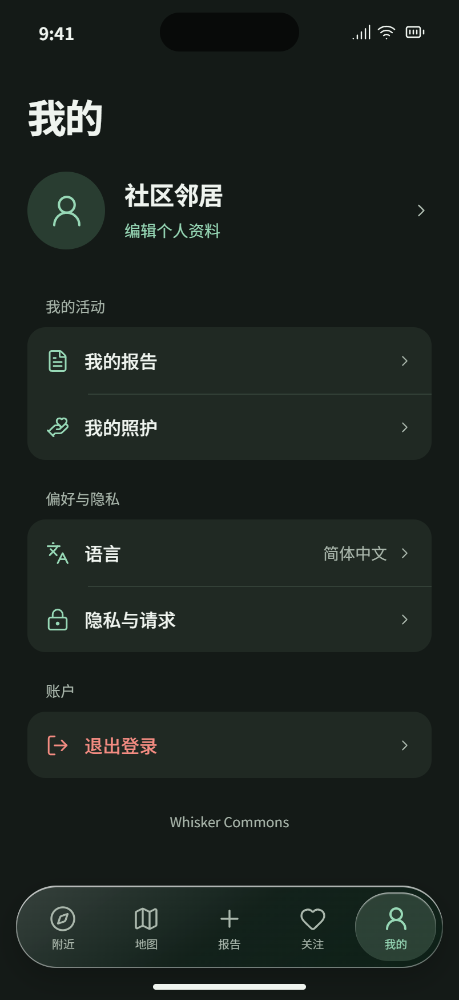